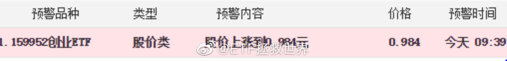

回复@颓废的猪头_Ju:你怕的时候我按，你贪的时候我还会按。舒舒服服的时候我瞎按什么。按摩也要讲规矩，不能乱按。//@颓废的猪头_Ju:回复@吧嗒木:他现在都不按了@ETF拯救世界:这一网效率极高，只用了十几个交易日。舒服。 
回复@Ojilth:我已经把所有方法，细节，经验，需要注意的事情都明明白白写出来了。只要按照自己的情况设计一下即可。//@Ojilth:E大，你考虑一下公布所有网格，每次看你收网，只能干着急@ETF拯救世界:这一网效率极高，只用了十几个交易日。舒服。